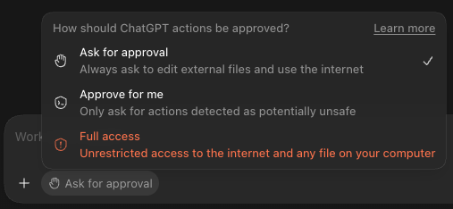

Permissions
Because Work and Codex can touch the files on your computer, ChatGPT lets you control when it needs permission to perform an action.
This setting is accessed in the chatbox. Choose the option which best fits your work.

The three modes
- Ask for approval — the default, it stops for your okay before every file edit or internet request. The safest, but requires constant approval of requests.
- Approve for me — a separate model reads each request and decides whether it's safe to run. Only requires approval if an action is deemed potentially dangerous.
- Full access — ChatGPT's requests do not need approval. Requires the least management, but mistakes are possible.
Is Full access safe?
For the most part, LLMs are smart enough and have comprehensive safety instructions, so catastrophic mistakes are rare.
That being said, minor mistakes happen on occasion, so Full access should be used with understanding of the risks.
When using Full access, some good practices include:
- Have ChatGPT do work on copies of files or in separate folders. "Sandbox" ChatGPT's work so mistakes are contained and the integrity of the original files is protected. Going further, have some kind of version control.
- Periodically check in as ChatGPT is working. Sometimes you may catch ChatGPT going down rabbit holes searching for some files or chasing a dead end, in which case you can interrupt it and steer it.
- Plan as much of the work out beforehand; unspecified requirements are usually the root of most mistakes.
- You can always ask ChatGPT to undo its work as long as everything is still fully in context.
Turn on notifications
Sometimes, ChatGPT takes extended time to think or do some work, so you won't always be watching it. If you have permissions set to require approval, you may want to have notifications enabled so ChatGPT can notify you when it is blocked.
Make sure that notifications are enabled both in ChatGPT's settings and for your operating system (Windows/Mac settings).